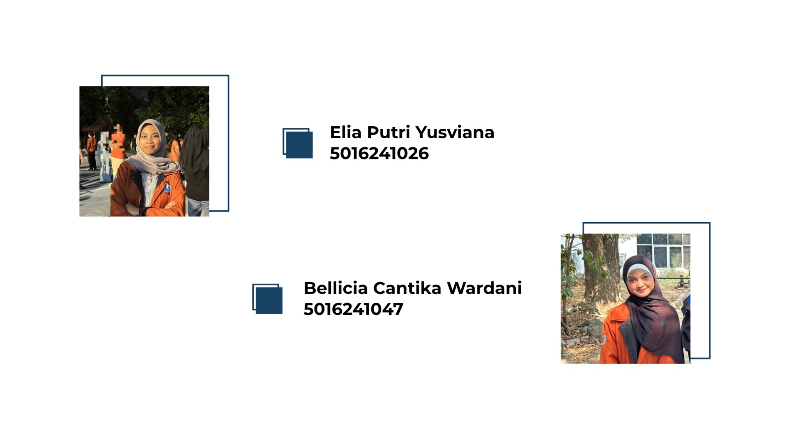
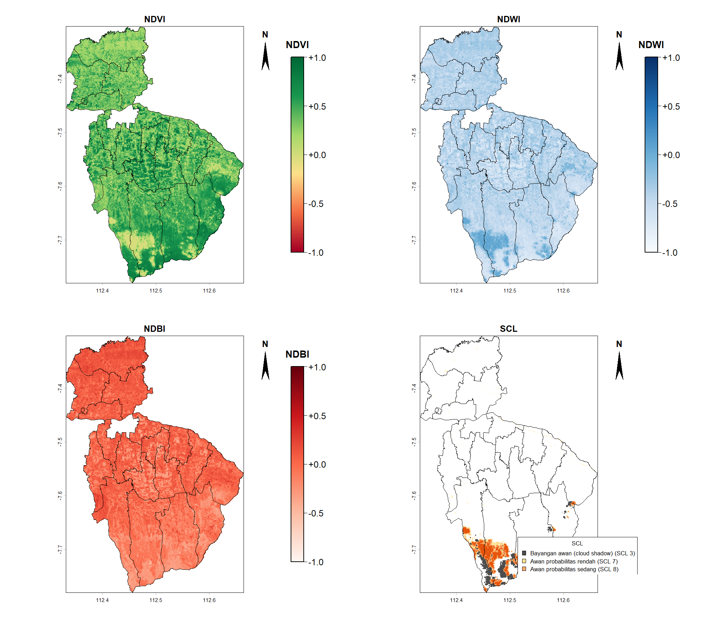
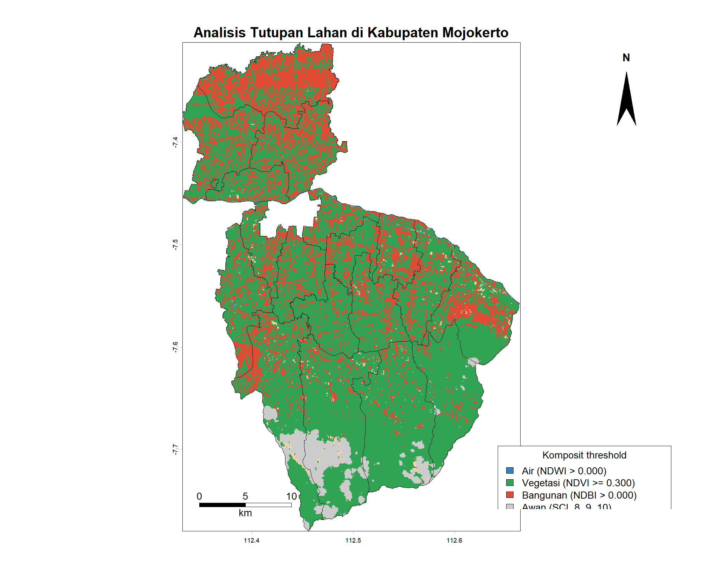
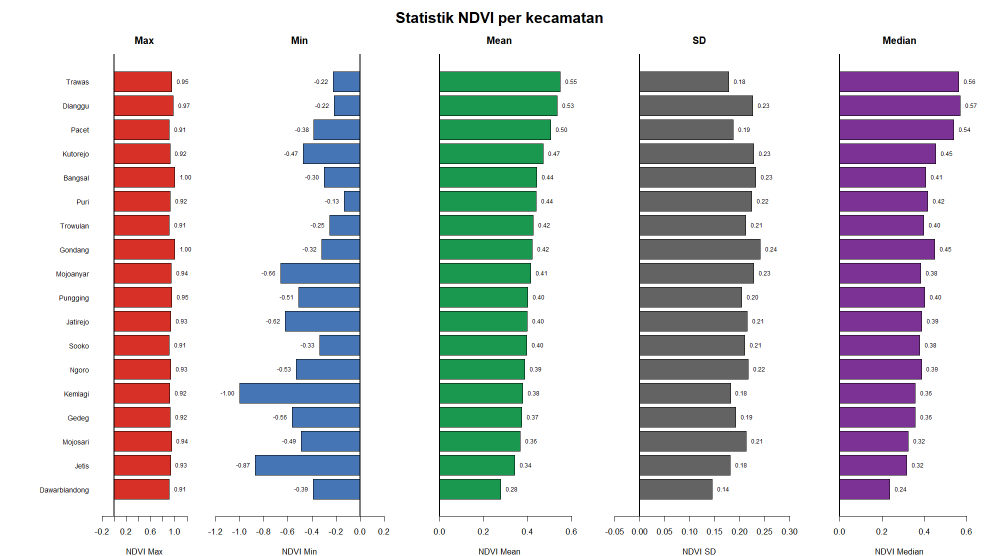

Identitas
KELOMPOK 12 PEMROGRAMAN SPASIAL KELAS A

Lokasi Studi
Kabupaten Mojokerto, Jawa Timur dengan 18 Kecamatan
Alasan Pemilihan Lokasi
Kabupaten Mojokerto yang dipilih karena memiliki karakteristik tutupan lahan yang beragam, seperti kawasan permukiman, industri, tambak, dan lahan pertanian. Keberagaman tersebut memungkinkan identifikasi perbedaan karakteristik spektral objek menggunakan citra Sentinel-2.
Peta Interaktif
Pilih layer lewat kontrol di pojok kanan atas peta (satu layer raster aktif sekaligus). Klik poligon kecamatan untuk melihat luas dan tabel statistik zonal. Batas administrasi dan nama kecamatan bisa dinyalakan atau dimatikan di kontrol yang sama.
Unduh GeoTIFF (resolusi tampilan 40 m, EPSG:4326): NDVI · NDWI · NDBI · SCL · Komposit
Sumber Data
- Batas administrasi (shapefile): BIG Inageoportal (Badan Informasi Geospasial).
- Citra satelit: Sentinel-2 Level-2A dari Copernicus (ESA).
Hasil Plot NDVI, NDWI, NDBI, dan SCL

Analisis Tutupan Lahan di Kabupaten Mojokerto

Statistik Zonal per Kecamatan
| Kecamatan | Luas (ha) | Luas (km²) | NDVI | NDBI | NDWI | SCL (% piksel) | ||||||||||||||||
|---|---|---|---|---|---|---|---|---|---|---|---|---|---|---|---|---|---|---|---|---|---|---|
| Mean | Min | Max | Median | SD | Mean | Min | Max | Median | SD | Mean | Min | Max | Median | SD | Bayangan | Awan rendah | Awan sedang | Awan tinggi | Cirrus | |||
| Bangsal | 2.499,5 | 25,00 | 0.440 | -0.298 | 1.000 | 0.406 | 0.233 | -0.031 | -0.478 | 0.550 | 0.006 | 0.181 | -0.449 | -0.855 | 0.442 | -0.438 | 0.171 | 0.00 | 0.05 | 0.00 | 0.00 | 0.00 |
| Dawarblandong | 8.135,0 | 81,35 | 0.277 | -0.390 | 0.905 | 0.236 | 0.145 | 0.117 | -0.472 | 0.641 | 0.131 | 0.107 | -0.367 | -0.832 | 0.472 | -0.350 | 0.110 | 0.00 | 0.44 | 0.00 | 0.00 | 0.00 |
| Dlanggu | 3.710,6 | 37,11 | 0.535 | -0.216 | 0.973 | 0.568 | 0.226 | -0.103 | -0.471 | 0.575 | -0.108 | 0.184 | -0.519 | -0.863 | 0.410 | -0.542 | 0.165 | 0.00 | 0.02 | 0.00 | 0.00 | 0.00 |
| Gedeg | 2.698,5 | 26,99 | 0.372 | -0.563 | 0.922 | 0.356 | 0.192 | 0.035 | -0.575 | 0.698 | 0.046 | 0.142 | -0.408 | -0.817 | 0.707 | -0.419 | 0.157 | 0.00 | 0.47 | 0.00 | 0.00 | 0.00 |
| Gondang | 11.333,7 | 113,34 | 0.420 | -0.318 | 1.000 | 0.447 | 0.241 | -0.107 | -0.593 | 0.500 | -0.099 | 0.137 | -0.381 | -1.000 | 0.400 | -0.431 | 0.217 | 7.00 | 2.13 | 8.92 | 12.63 | 0.00 |
| Jatirejo | 9.182,3 | 91,82 | 0.398 | -0.623 | 0.933 | 0.387 | 0.215 | -0.061 | -0.585 | 0.625 | -0.049 | 0.168 | -0.388 | -0.775 | 0.602 | -0.415 | 0.184 | 8.21 | 3.08 | 5.08 | 7.21 | 0.00 |
| Jetis | 6.007,1 | 60,07 | 0.342 | -0.871 | 0.927 | 0.315 | 0.181 | 0.059 | -0.526 | 0.774 | 0.073 | 0.126 | -0.399 | -0.850 | 0.929 | -0.401 | 0.142 | 0.00 | 0.33 | 0.00 | 0.00 | 0.00 |
| Kemlagi | 5.783,3 | 57,83 | 0.378 | -1.000 | 0.918 | 0.356 | 0.181 | 0.064 | -0.706 | 1.000 | 0.082 | 0.136 | -0.435 | -0.890 | 1.000 | -0.436 | 0.133 | 0.00 | 0.35 | 0.00 | 0.00 | 0.00 |
| Kutorejo | 4.403,3 | 44,03 | 0.471 | -0.474 | 0.919 | 0.452 | 0.228 | -0.063 | -0.480 | 0.592 | -0.032 | 0.178 | -0.474 | -0.837 | 0.583 | -0.471 | 0.169 | 0.00 | 0.02 | 0.00 | 0.00 | 0.00 |
| Mojoanyar | 2.494,0 | 24,94 | 0.413 | -0.660 | 0.938 | 0.382 | 0.228 | -0.017 | -0.535 | 0.757 | 0.018 | 0.179 | -0.431 | -0.853 | 0.791 | -0.436 | 0.180 | 0.00 | 1.16 | 0.00 | 0.00 | 0.00 |
| Mojosari | 2.975,0 | 29,75 | 0.365 | -0.490 | 0.944 | 0.324 | 0.213 | 0.013 | -0.631 | 0.653 | 0.045 | 0.159 | -0.386 | -0.858 | 0.618 | -0.384 | 0.170 | 0.00 | 0.94 | 0.00 | 0.00 | 0.00 |
| Ngoro | 6.747,0 | 67,47 | 0.386 | -0.532 | 0.928 | 0.386 | 0.217 | -0.010 | -0.623 | 0.666 | 0.002 | 0.150 | -0.411 | -0.834 | 0.663 | -0.440 | 0.171 | 0.10 | 0.64 | 0.33 | 0.26 | 0.00 |
| Pacet | 10.295,4 | 102,95 | 0.505 | -0.384 | 0.907 | 0.537 | 0.187 | -0.140 | -0.573 | 0.543 | -0.148 | 0.134 | -0.461 | -0.819 | 0.575 | -0.486 | 0.153 | 6.55 | 0.72 | 4.71 | 2.54 | 0.00 |
| Pungging | 4.567,6 | 45,68 | 0.399 | -0.509 | 0.947 | 0.401 | 0.204 | -0.010 | -0.548 | 0.631 | -0.001 | 0.147 | -0.412 | -0.871 | 0.622 | -0.432 | 0.162 | 0.00 | 0.85 | 0.00 | 0.00 | 0.00 |
| Puri | 3.736,7 | 37,37 | 0.440 | -0.130 | 0.922 | 0.416 | 0.224 | -0.011 | -0.479 | 0.623 | 0.020 | 0.174 | -0.457 | -0.834 | 0.182 | -0.458 | 0.165 | 0.00 | 0.04 | 0.00 | 0.00 | 0.00 |
| Sooko | 2.528,0 | 25,28 | 0.395 | -0.335 | 0.909 | 0.377 | 0.210 | 0.018 | -0.552 | 0.585 | 0.029 | 0.148 | -0.420 | -0.851 | 0.432 | -0.432 | 0.160 | 0.00 | 0.50 | 0.00 | 0.00 | 0.00 |
| Trawas | 6.473,4 | 64,73 | 0.547 | -0.224 | 0.951 | 0.562 | 0.178 | -0.135 | -0.565 | 0.530 | -0.138 | 0.142 | -0.506 | -0.871 | 0.402 | -0.515 | 0.140 | 1.95 | 0.51 | 1.68 | 0.94 | 0.00 |
| Trowulan | 4.880,8 | 48,81 | 0.424 | -0.252 | 0.906 | 0.397 | 0.212 | -0.005 | -0.494 | 0.496 | 0.017 | 0.164 | -0.449 | -0.823 | 0.380 | -0.444 | 0.153 | 0.00 | 0.61 | 0.00 | 0.00 | 0.00 |
Satu baris = satu kecamatan; tiap indeks memuat Mean, Min, Max, Median, dan SD. Kolom SCL berisi persentase piksel tiap kelas terhadap seluruh piksel valid kecamatan. Statistik dihitung dari raster 10 m (bukan versi untuk tampilan peta). Luas dihitung dari poligon shapefile (UTM 49S).
Peringkat Kecamatan dan Diagram Statistik

Peringkat berdasarkan nilai rata-rata (Mean) indeks per kecamatan. Pada diagram, kecamatan diurutkan dari rata-rata tertinggi (paling atas) ke terendah (paling bawah). Garis hitam menandai nilai 0.
1. Rumus Indeks Spektral dan SCL
Reflektansi (Sentinel-2 L2A): ρ = (DN − 1000) / 10000, dibatasi 0 sampai 1. Band B11 (20 m) di-resample bilinear ke 10 m, band SCL (20 m) di-resample nearest neighbour. Nilai tiap indeks berkisar -1 sampai 1.
| Indeks | Rumus | Band yang dipakai |
|---|---|---|
| NDVI | (B8 − B4) / (B8 + B4) | B8 NIR (10 m), B4 Merah (10 m) |
| NDBI | (B11 − B8) / (B11 + B8) | B11 SWIR-1 (20 m), B8 NIR (10 m) |
| NDWI | (B3 − B8) / (B3 + B8) | B3 Hijau (10 m), B8 NIR (10 m) |
| SCL | Kelas piksel hasil Sen2Cor (bukan hasil hitungan): 3 = bayangan awan, 7 = awan probabilitas rendah, 8 = awan probabilitas sedang, 9 = awan probabilitas tinggi, 10 = cirrus | Scene Classification Layer (20 m) |
Statistik zonal per kecamatan: Mean = Σx / n; Min dan Max = nilai terkecil dan terbesar; Median = nilai tengah; SD = √[Σ(x − mean)² / (n − 1)]; luas dari poligon batas (UTM 49S). Untuk SCL, yang dihitung adalah persentase piksel tiap kelas terhadap seluruh piksel valid kecamatan.
2. Cara Menghitung Threshold dan Komposit
A. Klasifikasi Rendah / Sedang / Tinggi (NDVI, NDWI, NDBI)
Metode yang dipakai: Equal weight (kuantil): batas kelas diambil dari persentil 33,3% dan 66,7% seluruh piksel tiap indeks, sehingga setiap kelas (Rendah, Sedang, Tinggi) berisi sekitar sepertiga piksel.
- Kumpulkan semua nilai piksel (x) tiap indeks pada raster tampilan 40 m, tanpa NA.
- Hitung dua batas dari persentil: b1 = P33,3 dan b2 = P66,7. Dengan begitu tiap kelas berisi sekitar 1/3 piksel.
- Klasifikasi: Rendah jika x ≤ b1; Sedang jika b1 < x ≤ b2; Tinggi jika x > b2.
B. Komposit (Air, Vegetasi, Bangunan, Awan)
Tiap piksel dicek berurutan dengan threshold tetap; aturan pertama yang terpenuhi dipakai:
- Awan jika SCL = 8, 9, 10.
- Air jika NDWI > 0.000.
- Vegetasi jika NDVI ≥ 0.300.
- Bangunan jika NDBI > 0.000.
- Selain itu masuk Lainnya (misalnya lahan terbuka atau vegetasi jarang).
3. Tabel Threshold Kategori per Indeks
| Indeks | Rendah (skor 1) | Sedang (skor 2) | Tinggi (skor 3) |
|---|---|---|---|
| NDVI | sampai 0.317 (33,3% piksel) | 0.317 s.d. 0.505 (33,3% piksel) | di atas 0.505 (33,3% piksel) |
| NDBI | sampai -0.096 (33,3% piksel) | -0.096 s.d. 0.057 (33,3% piksel) | di atas 0.057 (33,3% piksel) |
| NDWI | sampai -0.491 (33,3% piksel) | -0.491 s.d. -0.375 (33,3% piksel) | di atas -0.375 (33,3% piksel) |
Persentase piksel dihitung dari raster tampilan 40 m seluruh Kabupaten Mojokerto.
4. Tabel Kelas SCL
| Kode SCL | Kategori | Persentase piksel |
|---|---|---|
| 3 | Bayangan awan (cloud shadow) | 2,5% |
| 7 | Awan probabilitas rendah | 0,8% |
| 8 | Awan probabilitas sedang | 2,2% |
| 9 | Awan probabilitas tinggi | 2,4% |
| 10 | Cirrus | 0,0% |
5. Tabel Threshold Komposit
| Kelas | Threshold | Urutan prioritas | Persentase piksel |
|---|---|---|---|
| Air | NDWI > 0.000 | 3 | 0,3% |
| Vegetasi | NDVI ≥ 0.300 | 4 | 69,1% |
| Bangunan | NDBI > 0.000 | 5 | 25,2% |
| Awan | SCL = 8, 9, 10 | 1 (tertinggi) | 4,5% |
| Lainnya | Tidak memenuhi aturan di atas | 6 (sisa) | 0,9% |
6. Tabel Penentuan Kelas Komposit (Semua Kombinasi Kondisi)
Satu piksel bisa memenuhi lebih dari satu kriteria sekaligus (misalnya NDVI dan NDBI sama-sama lolos). Hasil akhirnya ditentukan oleh urutan prioritas: Awan, Air, Vegetasi, Bangunan, Lainnya. Tabel berikut memuat semua kombinasi kondisi beserta kelas hasilnya dan persentase piksel yang benar-benar jatuh di kombinasi tersebut.
| No | Awan (SCL 8, 9, 10) | Air (NDWI > 0.000) | Vegetasi (NDVI ≥ 0.300) | Bangunan (NDBI > 0.000) | Kelas hasil | Alasan penentuan | Persentase piksel |
|---|---|---|---|---|---|---|---|
| 1 | Ya | Ya | Ya | Ya | Awan | Awan prioritas 1: indeks lain diabaikan | 0,0% |
| 2 | Ya | Ya | Ya | Tidak | Awan | Awan prioritas 1: indeks lain diabaikan | 0,0% |
| 3 | Ya | Ya | Tidak | Ya | Awan | Awan prioritas 1: indeks lain diabaikan | 0,0% |
| 4 | Ya | Ya | Tidak | Tidak | Awan | Awan prioritas 1: indeks lain diabaikan | 1,8% |
| 5 | Ya | Tidak | Ya | Ya | Awan | Awan prioritas 1: indeks lain diabaikan | 0,0% |
| 6 | Ya | Tidak | Ya | Tidak | Awan | Awan prioritas 1: indeks lain diabaikan | 0,6% |
| 7 | Ya | Tidak | Tidak | Ya | Awan | Awan prioritas 1: indeks lain diabaikan | 0,1% |
| 8 | Ya | Tidak | Tidak | Tidak | Awan | Awan prioritas 1: indeks lain diabaikan | 1,9% |
| 9 | Tidak | Ya | Ya | Ya | Air | Bukan awan, NDWI lolos (prioritas 2): Air | 0,0% |
| 10 | Tidak | Ya | Ya | Tidak | Air | Bukan awan, NDWI lolos (prioritas 2): Air | 0,0% |
| 11 | Tidak | Ya | Tidak | Ya | Air | Bukan awan, NDWI lolos (prioritas 2): Air | 0,2% |
| 12 | Tidak | Ya | Tidak | Tidak | Air | Bukan awan, NDWI lolos (prioritas 2): Air | 0,1% |
| 13 | Tidak | Tidak | Ya | Ya | Vegetasi | Bukan awan & bukan air, NDVI lolos (prioritas 3): Vegetasi | 20,9% |
| 14 | Tidak | Tidak | Ya | Tidak | Vegetasi | Bukan awan & bukan air, NDVI lolos (prioritas 3): Vegetasi | 48,2% |
| 15 | Tidak | Tidak | Tidak | Ya | Bangunan | Bukan awan, air, vegetasi; NDBI lolos (prioritas 4): Bangunan | 25,2% |
| 16 | Tidak | Tidak | Tidak | Tidak | Lainnya | Tidak ada kriteria yang terpenuhi: Lainnya | 0,9% |